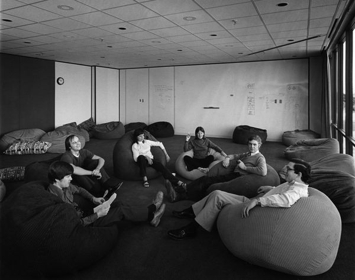
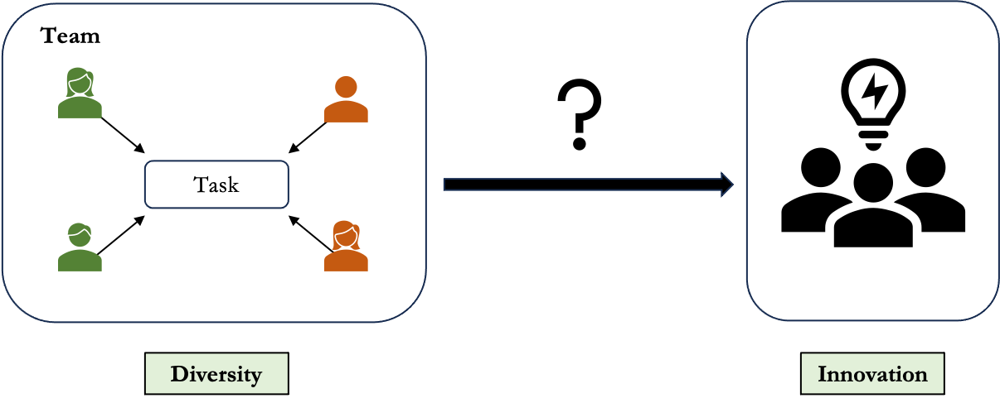
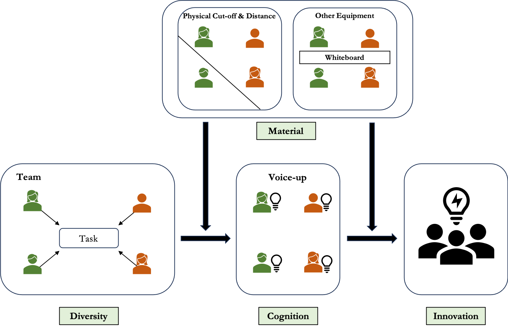

Seeds beneath the Surface
How Diversity Translates into Innovations in Organizational and Artistic Contexts
![]()
December 4, 2025
When diversity does become innovation
The Macintosh team, 1984

- Diverse team including artists, typographers, engineers…
- Turned GUI + mouse into a shipped, iconic product
Diversity in the team + ? → revolution and innovation
When diversity doesn’t become innovation
Xerox PARC, 1970s

- Similar diverse team of scientists, designers, programmers…
- Invented GUI, mouse, Ethernet — but stayed in the lab
Diversity in the team + ? → insufficient breakthroughs
Roadmap
Research Intuition: Question and Gap
Case Study with Quantitative and Computational Methods
- Study 1: Field Surveys in R&D and Art Studios
- Study 2: Generative Simulation
Contributions & Timeline
Research Intuition
Question: How does Diversity translates into Innovations?

Research Intuition
Existing Answers to the Question
Organizational Studies: Mixed Results
Yes! (Reagans and Zuckerman 2001)
It depends… (Knippenberg and Schippers 2007)
Cultural Evolution/Science of Science: Explaining Variations in …
Diversity (Uzzi and Spiro 2005; Cao, Pan, and Evans 2025)
Innovation (Shi and Evans 2020)
Research Intuition
Gaps: Bringing Sociology of Culture in
Innovation as a cultural process - individual cognition to shared meaning
- Cognitive Gap: the Internal Mechanism (DiMaggio 1997; Vaisey 2009)
Voice-up could be the mediator between diversity and innovations
How do diverse members speak of their ideas?
- Material Gap: the External Mechanism (McDonnell 2023)
Environmental settings could be the moderator between diversity and innovations - the constraints on the voices of members
How are the voices from diverse members get amplified or ignored?
Research Intuition
Research Question Revisited

Case Study
Two cases from the real world
R&D teams: formalized collaboration and innovations related to performance (~5)
Art studios / creative hubs: usually informal interactions and not performance-based productions (~5)
Testing through these two cases allows examinations of how the diversity-innovation black boxes unfolds differently
Case Study
Study 1 Field Surveys
Two-wave survey to collect data across 6 months:
Wave 1: Individual Background; Collaboration Networks; Spatial Data; Open-ended Idea Descriptions
Wave 2: Innovations/Productions (made or not); Team/Studio Evolution
Case Study
Study 1 Field Surveys
Variables:
Diversity: measured from Wave 1 backgrounds
Innovations: measured from Wave 2 innovations
Voice-up (Cognition): measured from Wave 1 open-ended ideas
Environment settings (Materials): measured from Wave 1 spatial data and collaboration networks
Methods: Regressions in task/production level
Limited in sample size and generalizability to longer period
Case Study
Study 2 Generative Simulation
Using LLMs and diffusion-based visual models to simulate agents and test compositions and space designs
Agents: Calibrated on Study 1, simulated by generative models
Environmental settings: Assigning different kinds of physical cut-offs and equipment
Simulation rounds: Agents interacting with each others -> Agents generating new ideas -> Voting for whether innovative or not
Evaluate how spatial configurations would lead to different ends of production trajectory.
Contributions
Methodological: Making template for integrating field data with generative simulations.
Practical: Designing spatial settings for teams and spaces in organizations, universities, and art institutions.
Theoretical: Connect sociology of cognition and materiality in explaining diversity-innovation relationship.
- Furthermore, this would be a foundation to theoretically frame how cognition-material interactions would shift the cultural evolutions.